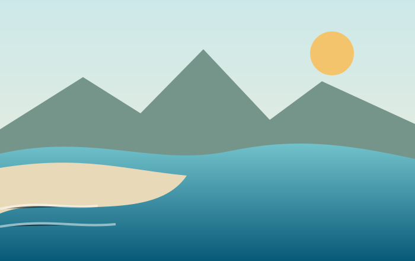
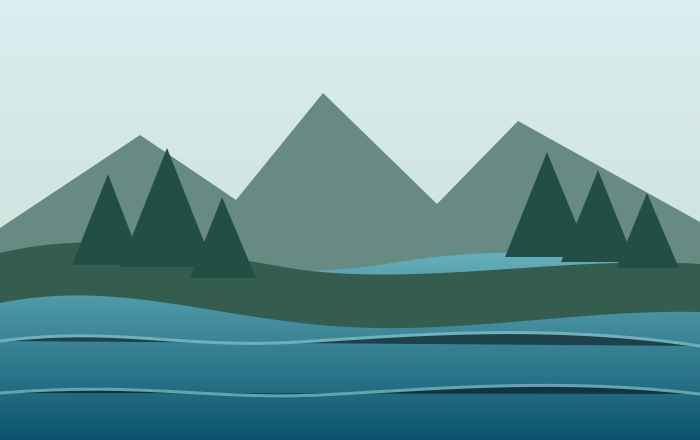
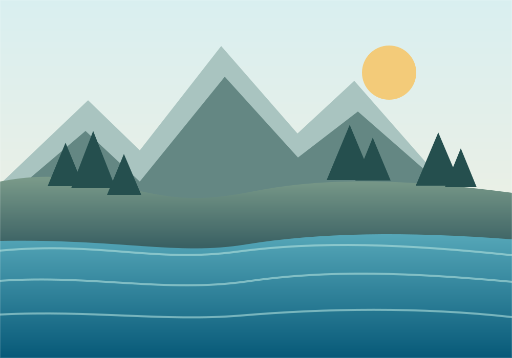

Пейзажи и детали
Собери Байкал в памяти
Небольшая иллюстрированная галерея проекта. Векторные изображения созданы специально для учебного сайта.

Линия берега
Тайга у воды Зимние узоры
Зимние узоры
Большой горизонтЛёд и светИллюстрации: авторская векторная графика проекта «Дискавери Байкал».